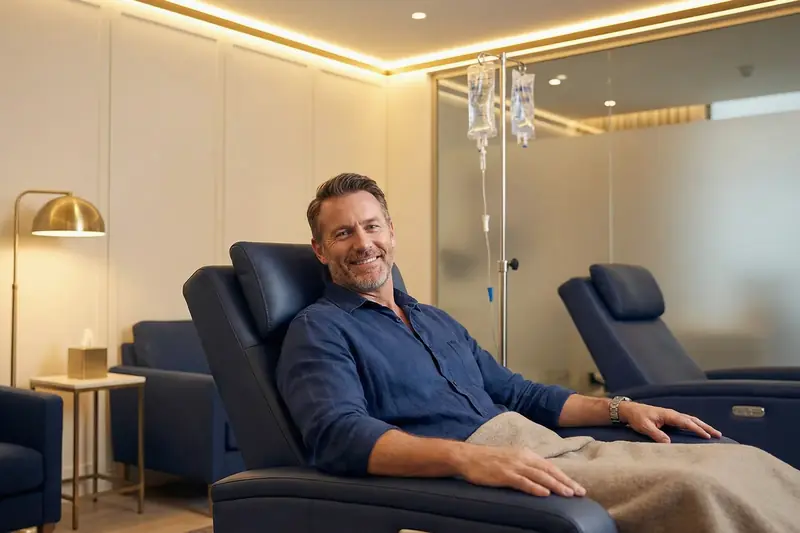

NAD+ and Longevity in Brisbane: Why Levels Fall and Where Infusions Fit
Levels of NAD+, a coenzyme central to energy and DNA repair, fall as we age. That is why longevity medicine takes an interest in it, though the case for infusions in people is still being made.

NAD+ falls as we age. Research suggests that by your 50s it may be less than half of what it was in your 20s, and the decline is associated with many of the hallmarks of ageing: reduced energy, slower recovery, cognitive changes and greater susceptibility to age-related conditions.
That matters because nicotinamide adenine dinucleotide, to give NAD+ its full name, is a coenzyme found in every cell of the body. It is central to energy metabolism, DNA repair, gene expression and the regulation of cellular stress responses. Without enough of it, cells cannot produce energy efficiently or repair damaged DNA, and cannot maintain the signalling pathways that keep tissues healthy.
The proteins that depend on NAD+
Sirtuins are a group of proteins that need NAD+ to work. They are sometimes nicknamed the body's "longevity genes". They regulate inflammation, mitochondrial function, DNA repair and cell survival pathways, and when NAD+ declines, sirtuin activity drops and the processes they regulate start to work less well.
PARP enzymes need NAD+ as well, to detect and repair breaks in DNA strands. As we age and DNA damage from environmental stressors builds up, PARPs consume more and more NAD+, which leaves less for energy production and other vital functions.
Research on NAD+ precursors and on direct NAD+ supplementation has grown substantially over the past decade, with studies examining a possible role in metabolic health, neurological function, cardiovascular health and overall cellular resilience.
What NAD+ does, and what is known about infusions
People often ask whether infusions help with energy, recovery, sleep, mood or ageing itself. The table sets what NAD+ does in the cell beside what can fairly be said about infusions. Every treatment at the clinic is individually assessed.
| Area | What NAD+ does in the cell | What can be said about infusions |
|---|---|---|
| Energy and mental clarity | Directly involved in mitochondrial energy production | Individual responses vary and are not guaranteed |
| Recovery and physical performance | Supports muscle cell repair and mitochondrial function, both critical for physical recovery | Some athletes and active people use it in their recovery routines; the evidence that infusions speed recovery is limited |
| Sleep quality | Plays a role in circadian rhythm regulation | Individual responses vary |
| Mood and neurological support | Involved in the pathways that make neurotransmitters, and supports energy metabolism in nerve cells | Emerging research is examining a possible role in mood regulation and neurological resilience |
| Cellular longevity | Supports sirtuin activity and DNA repair mechanisms | This is the reasoning behind its use in longevity medicine; infusions have not been shown to slow ageing in people |
IV or oral NMN and NR?
Oral precursors such as NMN (nicotinamide mononucleotide) and NR (nicotinamide riboside) are widely available and can support NAD+ levels over time. An infusion delivers NAD+ directly into the bloodstream, bypassing the digestive tract, and reaches significantly higher plasma concentrations than oral supplements. If IV delivery is clinically indicated for you, your doctor will discuss the most appropriate approach.
What a course involves
At the clinic, NAD+ infusion therapy is part of a personalised longevity and wellness program, assessed and supervised by registered medical practitioners. It begins with a comprehensive medical consultation. A doctor reviews your health history and medicines alongside your current symptoms and goals, decides whether NAD+ is appropriate for you and, if it is, designs a personalised protocol.
Infusions are given at 628 Ipswich Road, Annerley, and typically take 1.5 to 3 hours, because the rate has to be carefully controlled to minimise side effects. Some patients notice mild sensations during the infusion, such as warmth or chest tightness, or nausea. These resolve when the rate is slowed, and the medical team monitors every patient throughout.
A typical initial course is 3 to 5 infusions over one to two weeks, followed by maintenance infusions as your treating doctor recommends.
Who it may suit, and who should not have it
NAD+ infusion therapy may be appropriate for people with:
- persistent fatigue or low energy that has not responded to other interventions
- cognitive changes associated with ageing or chronic stress
- reduced physical performance or slow recovery from exercise
- a proactive interest in longevity medicine and cellular health
People with a neurodegenerative condition sometimes ask about it too. That is assessed on an individual basis, and the evidence in these conditions is still early.
A thorough medical assessment is always required before treatment, because NAD+ therapy is not suitable for everyone. Certain medical conditions, including active cancer, pregnancy or specific cardiovascular conditions, may mean it is not appropriate for you.
Written by the clinic's medical team. This article is general information only and does not replace individual medical advice. A consultation does not guarantee that any particular investigation, medicine or service will be appropriate for you.